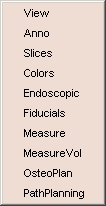

| 
|
Here are some sample modules:
- View: customizes the size of the viewer window. The stereo
mode allows viewing the 3D window in 3 dimensions, using red/blue glasses.
- Anno: controls the annotation displayed
in the 2D and 3D viewer.
- Slices: selects the slices to display in the
3D viewer window.
- Colors: enables you to create your own color palette.
- Endoscopic: places and controls a virtual endoscope
in Slicer's scene, and presents the endoscope's view in a second window.
- Fiducials: adds fiducial points on models in the 2D or 3D viewer windows.
- Measure: provides measuring tools to calculate
Surface Area, Volume, and Cross Sectional Area.
- MeasureVol: measures the volume of a segmented
structure in a label map.
|